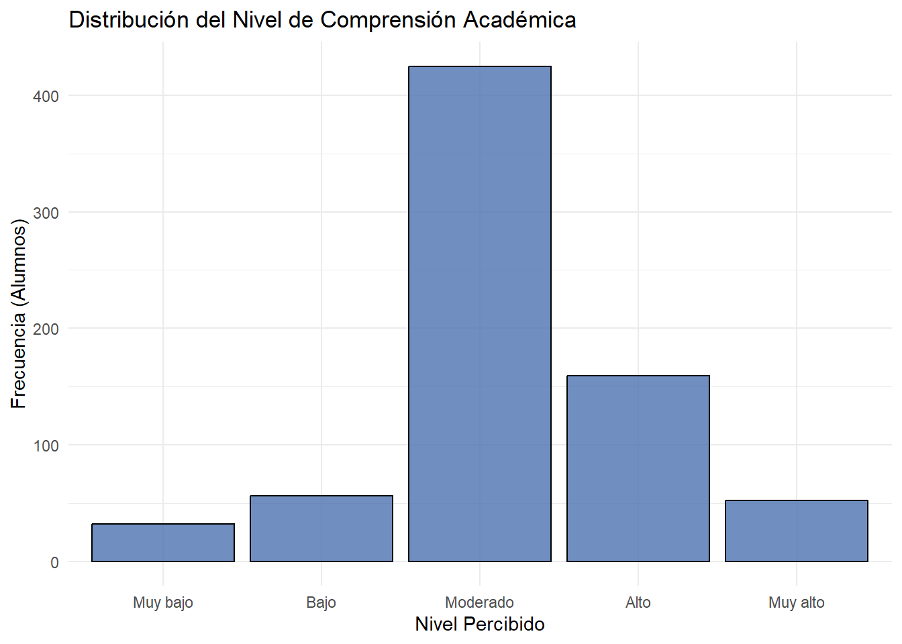
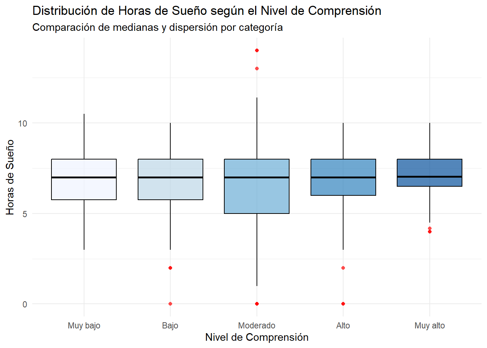
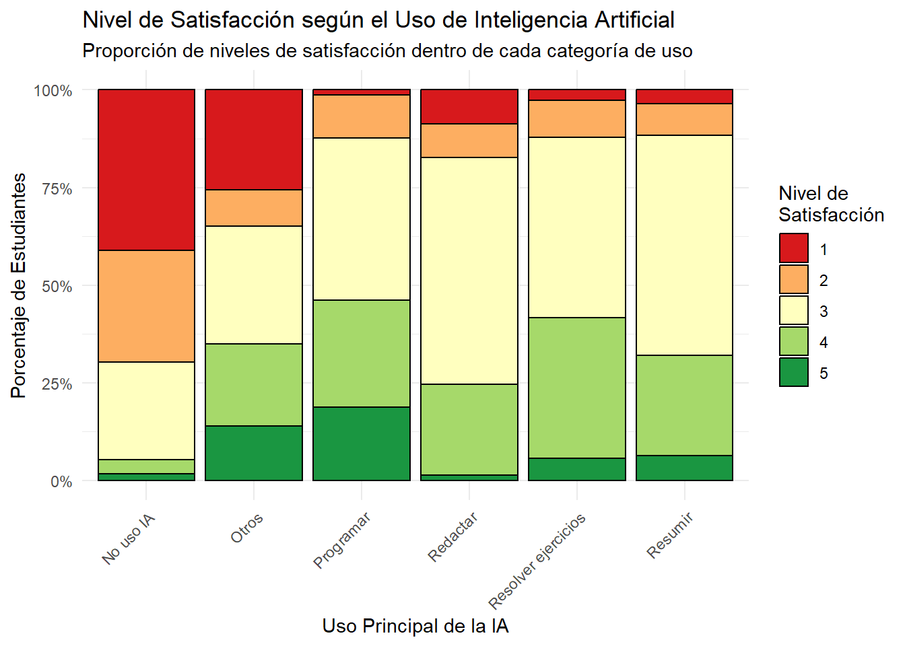
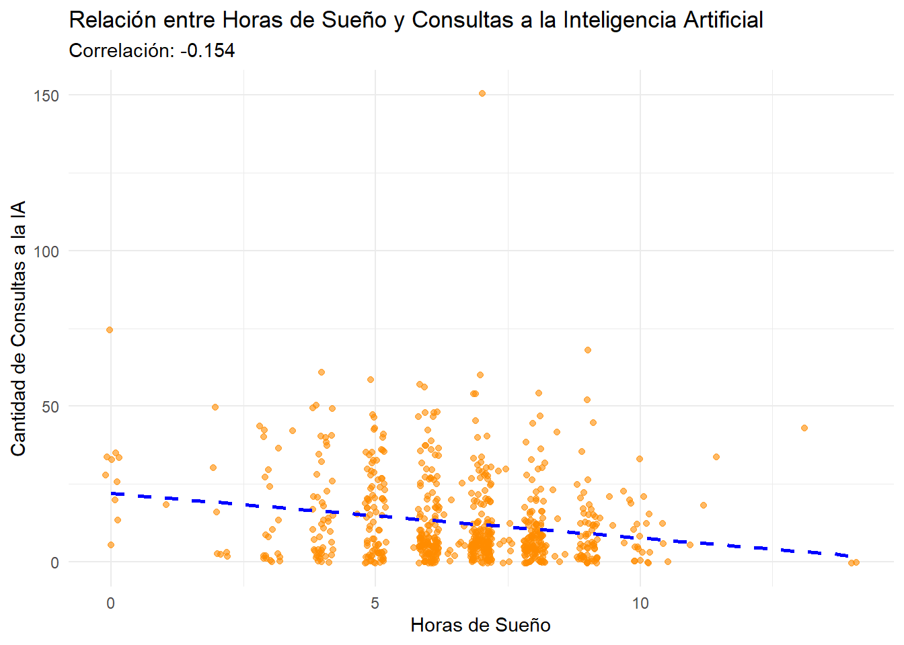

Código
library(readr)
library(dplyr)
library(ggplot2)
DF_diario <- read_csv("diario.csv", show_col_types = FALSE)
DF_exam <- read_csv("examenes.csv", show_col_types = FALSE)
DF_demo <- read_csv("demograficos.csv", show_col_types = FALSE)Estadística y Probabilidades I (CC1105)
library(readr)
library(dplyr)
library(ggplot2)
DF_diario <- read_csv("diario.csv", show_col_types = FALSE)
DF_exam <- read_csv("examenes.csv", show_col_types = FALSE)
DF_demo <- read_csv("demograficos.csv", show_col_types = FALSE)Nuestro tema en cuestión trata sobre la relación entre las horas de sueño, el uso de Inteligencia Artificial y el rendimiento académico en nuestra sección de Estadística y Probabilidades. Es relevante discutir al respecto ya que nos da la oportunidad de investigar de forma más analítica como varía el desempeño de un grupo universitario. Factores como el sueño o la IA tienen su impacto en la vida diaria de los estudiantes, y es posible que se puedan encontrar alguna tendencia que involucre ambas en el rendimiento académico.
Relación entre las horas de sueño, el uso de Inteligencia Artificial y el rendimiento académico de los estudiantes de Estadística y Probabilidades 1, sección 1 durante el ciclo 2026-2
Evaluar la relación entre las horas de sueño, el uso de herramientas de inteligencia artificial y el rendimiento académico de los estudiantes de Estadística y Probabilidades 1, sección 1, durante el ciclo 2026-2.
Analizar la relación entre la cantidad de horas de sueño y el rendimiento académico de los estudiantes de Estadística y Probabilidades I, sección 1, durante el ciclo 2026-2.
Analizar la relación entre las características del uso de herramientas de inteligencia artificial y el rendimiento académico de los estudiantes de Estadística y Probabilidades I, sección 1, durante el ciclo 2026-2, considerando la intensidad de uso y la utilidad percibida de estas herramientas.
Describir las correlación entre las horas de sueño y el nivel de compresión de las actividades académicas realizadas en los estudiantes de Estadística y Probabilidades I, sección 1, durante el ciclo 2026-2.
Formulario de Google Forms de aplicación periódica, compuesto por preguntas obligatorias destinadas a registrar las horas de sueño, el rendimiento académico y diferentes características del uso de herramientas de inteligencia artificial por parte de los estudiantes, como la cantidad de consultas realizadas, los días de uso, la utilidad percibida y la principal finalidad académica.
DF_diario %>%
rename(Cod = `Dirección de correo electrónico`
, Registro = `Marca temporal`,
Horas = `¿Cuántas horas dormiste la noche pasada?`,
Consultas = `¿Cuántas consultas a una IA realizaste hoy?`,
Comprension = `¿Qué nivel de comprensión tuviste de las actividades académicas que realizaste hoy?`,
Satisfaccion = `¿Qué nivel de satisfacción tienes con tu avance académico de hoy?`,
Uso = `¿Cuál fue el uso principal que le diste a la IA hoy?`,
Sensacion = `¿Cuál fue tu sensación principal después de usar la IA hoy?`
) -> DF_diario
DF_demo %>%
rename(Cod = `Dirección de correo electrónico`
, Registro = `Marca temporal`
, Creditos = `cantidad de créditos académicos cursados en el ciclo regular ( colocar solo el número )`
) -> DF_demo
DF_exam %>%
rename(Cod = `Dirección de correo electrónico`
, Registro = `Marca temporal`,
Nota = `Nota del examen`,
) -> DF_exam
subset_diario <- select(DF_diario, Cod, Registro, Horas, Consultas, Comprension, Satisfaccion, Uso, Sensacion)
subset_demo<- select(DF_demo, Cod, Creditos)
subset_exam <- select(DF_exam, Cod, Nota)| Variable | Tipo | Ejemplo de medición |
|---|---|---|
Horas de Sueño |
Cuantitativa continua | 5.5 h/6h/7.25h |
Nota de Examen |
Cuantitativa continua | 12.5/14.8/16/18.5 |
Consultas a la IA |
Cuantitativa discreta | 0/3/8/15/20 |
Créditos Académicos |
Cuantitativa discreta | 5/10/14/18/22 |
Nivel de Comprensión |
Cualitativa ordinal | Muy bajo / Bajo / Moderado / Alto / Muy alto |
Satisfacción de rendimiento académico |
Cualitativa ordinal | Muy insatisfecho / Insatisfecho / Neutral / Satisfecho / Muy satisfecho |
Principal Uso de IA |
Cualitativa Nominal | Resolver ejercicios / Explicar temas / Resumir / Revisar respuestas / No uso IA |
Sensación de uso de IA |
Cualitativa Nominal | Confianza / Alivio / Frustración / Indiferencia / No usó IA ese día |
Adicionalmente cada subset cuenta con una columna Cod para identificación y Registro únicamente en el subset diario por motivos de limpieza.
Las variables ordinales se codifican como factores ordenados, respetando el orden conceptual de sus categorías. Las variables nominales se codifican como factores no ordenados. Para las variables discretas y continuas, se asegura que su formato, sea entero o decimal, sea correcto.
subset_diario <- subset_diario %>%
mutate(
# Continua
Horas = as.numeric(Horas),
# Discreta
Consultas = as.integer(Consultas),
# Cualitativa ordinal
# Muy bajo < Bajo < Moderado < Alto < Muy alto
Comprension = factor(
trimws(as.character(Comprension)),
levels = c("Muy bajo", "Bajo", "Moderado", "Alto", "Muy alto"),
ordered = TRUE
),
# Cualitativa ordinal
# 1 < 2 < 3 < 4 < 5
Satisfaccion = factor(
trimws(as.character(Satisfaccion)),
levels = c("1", "2", "3", "4", "5"),
ordered = TRUE
),
# Cualitativa nominal
Uso = factor(Uso, ordered = FALSE),
# Cualitativa nominal
Sensacion = factor(
trimws(as.character(Sensacion)),
ordered = FALSE
)
)
subset_demo <- subset_demo %>%
mutate(
Creditos = as.integer(Creditos))
subset_exam <- subset_exam %>%
mutate(
Nota = as.numeric(Nota))str(subset_diario)tibble [808 × 8] (S3: tbl_df/tbl/data.frame)
$ Cod : chr [1:808] "camila.alfaro@utec.edu.pe" "angelo.urbina@utec.edu.pe" "camila.alfaro@utec.edu.pe" "eduardo.vila@utec.edu.pe" ...
$ Registro : chr [1:808] "12/09/2026 14:07:28" "12/09/2026 17:50:32" "12/09/2026 21:33:05" "12/09/2026 21:41:39" ...
$ Horas : num [1:808] 9 5 9 8.33 8 7 8 8 5 10 ...
$ Consultas : int [1:808] 9 0 13 2 4 32 2 2 20 0 ...
$ Comprension : Ord.factor w/ 5 levels "Muy bajo"<"Bajo"<..: 4 3 4 5 3 3 4 3 3 2 ...
$ Satisfaccion: Ord.factor w/ 5 levels "1"<"2"<"3"<"4"<..: 4 3 3 4 3 3 1 4 3 1 ...
$ Uso : Factor w/ 51 levels "-","0","Agendara recordatorio",..: 45 14 45 19 45 45 3 45 47 24 ...
$ Sensacion : Factor w/ 5 levels "Alivio","Confianza",..: 1 1 1 2 1 4 4 4 4 5 ...str(subset_demo)tibble [44 × 2] (S3: tbl_df/tbl/data.frame)
$ Cod : chr [1:44] "alejandro.soto@utec.edu.pe" "eduardo.vila@utec.edu.pe" "martin.armas@utec.edu.pe" "camila.alfaro@utec.edu.pe" ...
$ Creditos: int [1:44] 22 22 20 18 16 4 18 22 21 18 ...str(subset_exam)tibble [188 × 2] (S3: tbl_df/tbl/data.frame)
$ Cod : chr [1:188] "johan.huayta@utec.edu.pe" "samuel.abril@utec.edu.pe" "renzo.rivera.t@utec.edu.pe" "juan.fernandez.s@utec.edu.pe" ...
$ Nota: num [1:188] 15 9 14 4.5 18.8 ...La variable Uso es un caso particular, es la única variable escogida en la que es posible escribir un uso aparte de las opciones múltiple disponibles, por lo que es necesario normalizar. Al final hubo una variedad de usos que diferían bastante uno de otro, sin embargo, habían varios que expresaban que no se ha usado IA en ese día. Debido a esto, determinamos que para la variable Uso, se optó por unificar estas respuestas como No uso IA y Otros
subset_diario <- subset_diario %>%
mutate(
# Limpieza de la variable Uso
Uso = case_when(
grepl("(?i)ningun|nada|no.*us[eé]|nothing", Uso) ~ "No uso IA",
Uso %in% c("Resolver ejercicios", "Resumir", "Programar", "Redactar", "No uso IA") ~ Uso,
TRUE ~ "Otros"
)
)
unique(subset_diario$Uso)[1] "Resumir" "No uso IA" "Otros"
[4] "Resolver ejercicios" "Programar" "Redactar" Adicionalmente, como sección se ha definido que el subset diario se llenaría diariamente, por lo que se filtran aquellas observaciones que se hayan subido por la misma persona el mismo día.
subset_diario <- subset_diario %>%
mutate(Fecha = as.Date(Registro)) %>%
arrange(Cod, Registro) %>%
distinct(Cod, Fecha, .keep_all = TRUE) %>%
select(-Fecha) radiografia <- function(datos) {
data.frame(
Variable = names(datos),
NAs = colSums(is.na(datos)),
Datos_Llenos = colSums(!is.na(datos)),
Total_Filas = nrow(datos)
)
}
radiografia_diario <- radiografia(subset_diario)
radiografia_demo <- radiografia(subset_demo)
radiografia_exam <- radiografia(subset_exam)radiografia_diarioradiografia_demoradiografia_examgrupo <- c(
"cristobal.aranda@utec.edu.pe",
"pedro.chavez@utec.edu.pe",
"joaquin.temoche@utec.edu.pe",
"eden.paredes@utec.edu.pe",
"nestor.delacruz@utec.edu.pe"
)
n_grupo_di <- subset_diario |>
filter(Cod %in% grupo) |>
distinct(Cod, as.Date(Registro)) |>
nrow()
n_grupo_ex <- subset_exam |> filter(Cod %in% grupo) |> nrow()
n_grupo_dem<- subset_demo |> filter(Cod %in% grupo) |> nrow()cat("Total de observaciones limpias de todos los subsets:", nrow(subset_diario) + nrow(subset_demo) + nrow(subset_exam), "\n")Total de observaciones limpias de todos los subsets: 956 cat("Total de observaciones limpias del grupo:", n_grupo_di + n_grupo_ex + n_grupo_dem, "\n")Total de observaciones limpias del grupo: 124 Calculamos la media y la mediana como medidas de posición y la Desviación Estándar y el Rango Intercuartil como medidas de dispersión.
La media nos da el promedio aritmético, pero se puede ver afectado a valores muy grandes o pequeños . Por otro lado, la mediana nos dara el valor que está exactamente en el medio. Al compararlas podemos analizar que si la media es muy distinta a la mediana, significa que hay valores extremos que tiran del promedio, pero si son similares, el sueño en el salón es más simétrico.
La desviación estándar nos indica cuántas horas, en promedio, se alejan los alumnos de la media global. El rango intercuartil nos indica en qué rango de horas de sueño se concentra el 50% central de los estudiantes, ignorando a los que duermen muy poco o en exceso.
summary(subset_diario$Horas) Min. 1st Qu. Median Mean 3rd Qu. Max.
0.000 6.000 7.000 6.616 8.000 14.000 media_horas <- mean(subset_diario$Horas, na.rm = TRUE)
mediana_horas <- median(subset_diario$Horas, na.rm = TRUE)
sd_horas <- sd(subset_diario$Horas, na.rm = TRUE)
iqr_horas <- IQR(subset_diario$Horas, na.rm = TRUE)
cat("Media:", media_horas, "\nMediana:", mediana_horas,
"\nDesv. Estándar:", sd_horas, "\nIQR:", iqr_horas)Media: 6.615831
Mediana: 7
Desv. Estándar: 1.914097
IQR: 2ggplot(subset_diario, aes(x = Horas)) +
geom_histogram(binwidth = 1, fill = "steelblue", color = "black", alpha = 0.7) +
geom_vline(aes(xintercept = media_horas), color = "red", linetype = "dashed", linewidth = 1) +
geom_vline(aes(xintercept = mediana_horas), color = "green", linetype = "solid", linewidth = 1) +
labs(title = "Distribución de las Horas de Sueño",
subtitle = "Rojo = Media | Verde = Mediana",
x = "Horas de Sueño",
y = "Frecuencia (Cantidad de alumnos)") +
theme_minimal()Se puede notar como la mayoría de estudiantes hace pocas consultas usualmente, pero también es posible que a veces se hacen consultas más numerosas. Por ello, la medida de posición más confiable aquí es la mediana, junto con el rango (mínimo y máximo) y el IQR para la dispersión.
La mediana sería la descripción más adecuada, si se usará la media, es probable que aquellas observaciones que contienen las consultas numerosas muevan el promedio, y esto no representaría al publico general.
El rango nos revela los extremos absolutos de uso en el salón, y para medir la variabilidad en la cantidad de consultas a la IA, el rango intercuartil permite hacer esto de forma que aquellos valores más altos no influyan enormemente en el nivel de dispersión del rango de consultas
mediana_consultas <- median(subset_diario$Consultas, na.rm = TRUE)
cuartiles_consultas <- quantile(subset_diario$Consultas, probs = c(0.25, 0.75), na.rm = TRUE)
iqr_consultas <- IQR(subset_diario$Consultas, na.rm = TRUE)
rango_consultas <- range(subset_diario$Consultas, na.rm = TRUE)
cat("Mediana (Posición central):", mediana_consultas, "\n")Mediana (Posición central): 7 cat("Mínimo:", rango_consultas[1], "| Máximo:", rango_consultas[2], "\n")Mínimo: 0 | Máximo: 150 cat("El 50% central de los alumnos realiza entre", cuartiles_consultas[1], "y", cuartiles_consultas[2], "consultas.\n")El 50% central de los alumnos realiza entre 3 y 18 consultas.cat("Rango Intercuartílico (IQR):", iqr_consultas, "\n")Rango Intercuartílico (IQR): 15 Utilizamos la mediana y la moda como medidas de posición, y la Distribución de Frecuencias Relativas para evaluar la dispersión.
Al ser una variable ordinal, sus categorías tienen una jerarquía lógica de “Muy bajo” a “Muy alto”. Aunque no podemos calcular un promedio matemático, la mediana nos permite identificar el punto de quiebre donde se sitúa el 50% de la clase, mientras que la moda nos indica la sensación más predominante.\
La dispersión se justifica a través de los porcentajes relativos, esto nos revela si el salón tiene baja (“Moderado”) o alta dispersión (“Muy bajo” y “Muy alto”)
tabla_comprension <- table(subset_diario$Comprension)
prop_comprension <- prop.table(tabla_comprension) * 100
prop_comprension
Muy bajo Bajo Moderado Alto Muy alto
4.419890 7.734807 58.701657 21.961326 7.182320 moda_comprension <- names(tabla_comprension)[which.max(tabla_comprension)]
mediana_comprension_idx <- median(as.numeric(subset_diario$Comprension), na.rm = TRUE)
mediana_comprension <- levels(subset_diario$Comprension)[mediana_comprension_idx]
cat("La Moda es:", moda_comprension, "\nLa Mediana se ubica en:", mediana_comprension, "\n")La Moda es: Moderado
La Mediana se ubica en: Moderado library(ggplot2)
ggplot(subset_diario[!is.na(subset_diario$Comprension), ], aes(x = Comprension)) +
geom_bar(fill = "#4C72B0", color = "black", alpha = 0.8) +
labs(title = "Distribución del Nivel de Comprensión Académica",
x = "Nivel Percibido",
y = "Frecuencia (Alumnos)") +
theme_minimal()
Ante esta variable nominal, sus categorias son independientes y carecen de un orden jerárquico, por lo que la única medida de posición es la moda.
Para medir su variabilidad o dispersión, recurrimos al análisis porcentual de sus frecuencias, esto nos ayudará a entender que tan concentrados o diversos está cada una de estas categorias.
tabla_uso <- table(subset_diario$Uso)
prop_uso <- prop.table(tabla_uso) * 100
prop_uso_ordenada <- sort(prop_uso, decreasing = TRUE)
cat("Distribución porcentual de los usos de IA:\n")Distribución porcentual de los usos de IA:print(round(prop_uso_ordenada, 2))
Resolver ejercicios Resumir Programar Redactar
31.77 23.76 21.27 9.53
No uso IA Otros
7.73 5.94 moda_uso <- names(prop_uso_ordenada)[1]
porcentaje_moda <- round(prop_uso_ordenada[1], 2)
cat("\nConclusión Descriptiva:\n")
Conclusión Descriptiva:cat("La Moda es '", moda_uso, "', concentrando un ", porcentaje_moda, "% del total de las respuestas registradas.\n", sep = "")La Moda es 'Resolver ejercicios', concentrando un 31.77% del total de las respuestas registradas.Para evaluar la interacción entre una variable cuantitativa continua (Horas de sueño) y una cualitativa ordinal (Comprension), se calcula el resumen de medidas de tendencia central y dispersión (Media, Mediana y Desviación Estándar) de las horas de sueño agrupadas por cada nivel de comprensión.
De esta forma podremos comparar directamente si los estudiantes que reportan un nivel de comprensión “Alto” o “Muy alto” presentan, en promedio, patrones de sueño distintos frente a los que reportan un nivel “Bajo” o “Muy bajo”.
Para la visualización utilizaremos Boxplots. Nos permite observar en paralelo las medianas (línea central de la caja), la dispersión del 50% central (tamaño de la caja) y la presencia de valores atípicos en las horas de sueño para cada uno de los cinco niveles de comprensión percibida.
# 1. Tabla de resumen numérico agrupado
resumen_bivariado <- subset_diario %>%
filter(!is.na(Comprension) & !is.na(Horas)) %>%
group_by(Comprension) %>%
summarise(
Cantidad_Alumnos = n(),
Media_Horas = round(mean(Horas), 2),
Mediana_Horas = median(Horas),
Desv_Estandar = round(sd(Horas), 2)
)
cat("Resumen de Horas de Sueño por Nivel de Comprensión:\n")Resumen de Horas de Sueño por Nivel de Comprensión:print(resumen_bivariado)# A tibble: 5 × 5
Comprension Cantidad_Alumnos Media_Horas Mediana_Horas Desv_Estandar
<ord> <int> <dbl> <dbl> <dbl>
1 Muy bajo 32 6.77 7 1.98
2 Bajo 56 6.67 7 2.16
3 Moderado 425 6.55 7 1.98
4 Alto 159 6.58 7 1.77
5 Muy alto 52 7.15 7.04 1.32# 2. Gráfico de cajas comparativo
ggplot(subset_diario %>% filter(!is.na(Comprension) & !is.na(Horas)),
aes(x = Comprension, y = Horas, fill = Comprension)) +
geom_boxplot(alpha = 0.7, color = "black", outlier.color = "red", outlier.shape = 16) +
labs(title = "Distribución de Horas de Sueño según el Nivel de Comprensión",
subtitle = "Comparación de medianas y dispersión por categoría",
x = "Nivel de Comprensión",
y = "Horas de Sueño") +
scale_fill_brewer(palette = "Blues") + # Paleta de colores secuencial
theme_minimal() +
theme(legend.position = "none") # Ocultamos leyenda porque el eje X ya lo explica
A partir del análisis entre las horas de sueño y el nivel de comprensión percibido, se pueden notas ciertas particularidades:
La expectativa inicial es que si estás bien descansado, rendirás mejor, pero los datos revelan que la mediana de sueño se mantiene constante en 7 horas para la gran mayoría de los niveles de comprensión.
El pequeño grupo de estudiantes que reportó el menor nivel de comprensión fue el que registró la mayor cantidad de horas de sueño, lo cual es lo opuesto de la expectativa inicial. También se puede ver en la amplitud de su caja y su desviación estándar que que este grupo posee los hábitos de sueño más irregulares.
El diagrama de cajas permite identificar casos atípicos de estudiantes que reportaron dormir cantidades mínimas, y a pesar de esto, estos alumnos lograron posicionarse en los niveles de comprensión “Moderado” e incluso “Alto”.
De por si se podría argumentar que este análisis contradice los resultados que se esperaban inicialmente en esta relación, y resulta que el sueño, por si sola, no ha sido un factor que influye directamente con el nivel de comprensión en este grupo de estudiantes.
Para evaluar la interacción entre dos variables cualitativas (Uso y Satisfaccion), utilizamos una tabla de contingencia que cruza las frecuencias de ambas categorías. Para que la comparación sea justa sin importar si un uso es más popular que otro, analizamos las proporciones relativas dentro de cada tipo de uso.
Visualmente, empleamos un gráfico de barras apiladas al 100%. Esto nos permite observar rápidamente la distribución de los niveles de satisfacción como porcentajes dentro de cada categoría de uso de IA.
tabla_uso_satisfaccion <- table(subset_diario$Uso, subset_diario$Satisfaccion)
prop_uso_satisfaccion <- prop.table(tabla_uso_satisfaccion, margin = 1) * 100
cat("Porcentaje de Satisfacción según el tipo de Uso de IA:\n")Porcentaje de Satisfacción según el tipo de Uso de IA:print(round(prop_uso_satisfaccion, 2))
1 2 3 4 5
No uso IA 41.07 28.57 25.00 3.57 1.79
Otros 25.58 9.30 30.23 20.93 13.95
Programar 1.30 11.04 41.56 27.27 18.83
Redactar 8.70 8.70 57.97 23.19 1.45
Resolver ejercicios 2.61 9.57 46.09 36.09 5.65
Resumir 3.49 8.14 56.40 25.58 6.40ggplot(subset_diario %>% filter(!is.na(Uso) & !is.na(Satisfaccion)),
aes(x = Uso, fill = Satisfaccion)) +
geom_bar(position = "fill", color = "black") +
scale_y_continuous(labels = scales::percent_format()) +
scale_fill_brewer(palette = "RdYlGn") +
labs(title = "Nivel de Satisfacción según el Uso de Inteligencia Artificial",
subtitle = "Proporción de niveles de satisfacción dentro de cada categoría de uso",
x = "Uso Principal de la IA",
y = "Porcentaje de Estudiantes",
fill = "Nivel de\nSatisfacción") +
theme_minimal() +
theme(axis.text.x = element_text(angle = 45, hjust = 1))
A partir de este gráfico se puede apreciar algunas cosas interesantes:
En la opción de Uso donde no se usó IA, hay un porcentaje considerable que muestra un nivel de satisfacción bajo. Se puede interpretar que la satisfacción que los estudiantes perciben sobre su propio rendimiento puede estar ligado, en algún nivel, a si usaron IA o no aquel día.
Por otro lado, el uso que parece traer más satisfacción resulta ser Programar, lo cuál tiene sentido debido a su naturaleza repetitiva. Usar IA de esta forma puede ser un factor asociado posible con una satisfacción mayor ese día.
En general, parece que el nivel más prominente de nivel de satisfacción es el 3, por lo que uno puede interpretar que la sección en sí se siente neutral en cuanto a su rendimiento académico diario.
Al tratarse de dos variables cuantitativas (Horas y Consultas), la técnica adecuada para analizar su interacción es el Diagrama de Dispersión acompañado del Coeficiente de Correlación. Esto nos indicará si existe una asociación lineal entre la falta de sueño y una mayor dependencia de herramientas de IA.
Dado que la variable de consultas es discreta y muchos estudiantes pueden reportar los mismos valores, aplicaremos un ligero desplazamiento visual en el gráfico para evitar que los puntos se superpongan y poder apreciar la verdadera concentración de los datos.
correlacion <- cor(subset_diario$Horas, subset_diario$Consultas, method = "spearman")
cat("Coeficiente de Correlación de Spearman:", round(correlacion, 3), "\n")Coeficiente de Correlación de Spearman: -0.154 ggplot(subset_diario, aes(x = Horas, y = Consultas)) +
geom_jitter(alpha = 0.6, color = "darkorange", width = 0.2, height = 0.5) +
geom_smooth(method = "lm", formula = y ~ x, color = "blue", linetype = "dashed", se = FALSE) +
labs(title = "Relación entre Horas de Sueño y Consultas a la Inteligencia Artificial",
subtitle = paste("Correlación:", round(correlacion, 3)),
x = "Horas de Sueño",
y = "Cantidad de Consultas a la IA") +
theme_minimal()
El coeficiente es negativo pero cercano a 0, por lo que hay una dependencia débil entre estas dos variables. Se puede observar como si existe una tendencia donde los estudiantes que durmieron menos horas hacen más consultas, pero no es lo suficiente significante como para argumentar que la falta de horas de sueño afecta considerablemente el número de consultas.
Las cantidades más grandes de consultas ocurren dentro de un rango promedio de sueño, lo que evidencia que la necesidad intensiva de IA no esta ligado directamente al agotamiento físico, si no lo que son trabajos o tareas académicas del momento.
Se puede concluir que, a pesar de que existe una relación mínima, la cantidad de consultas a la IA no esta asociada a las horas de sueño.